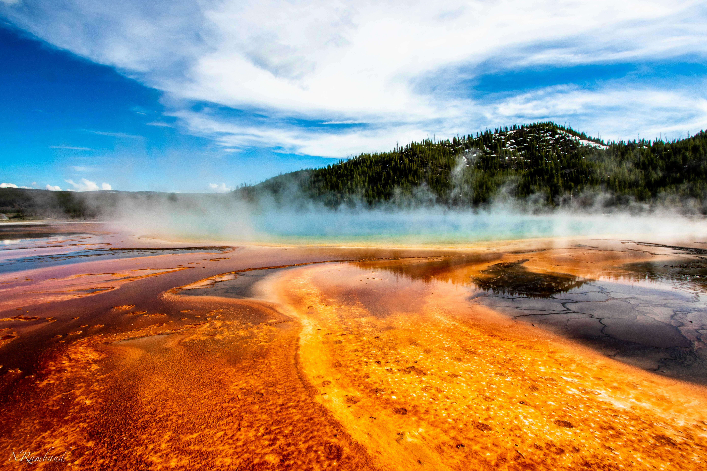

About the Park
Yellowstone was the first national park in the United States, established in 1872. It stretches across Wyoming, Montana, and Idaho.
Graphics
Canvas Shape
Canvas Gradient
Canvas Text
This is 100% real footage
*Disclaimer: Actual Yellowstone wildlife may look different.
Sounds of Yellowstone
Hear the rivers, birds, and wildlife found throughout the park when humans are not watching.
Park Highlight

Grand Prismatic Spring is the largest hot spring in the United States and is famous for its bright rainbow colors.